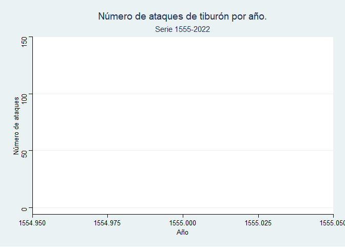
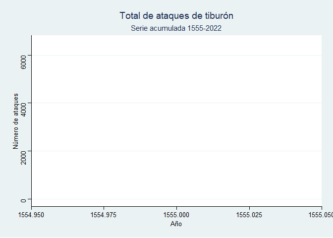
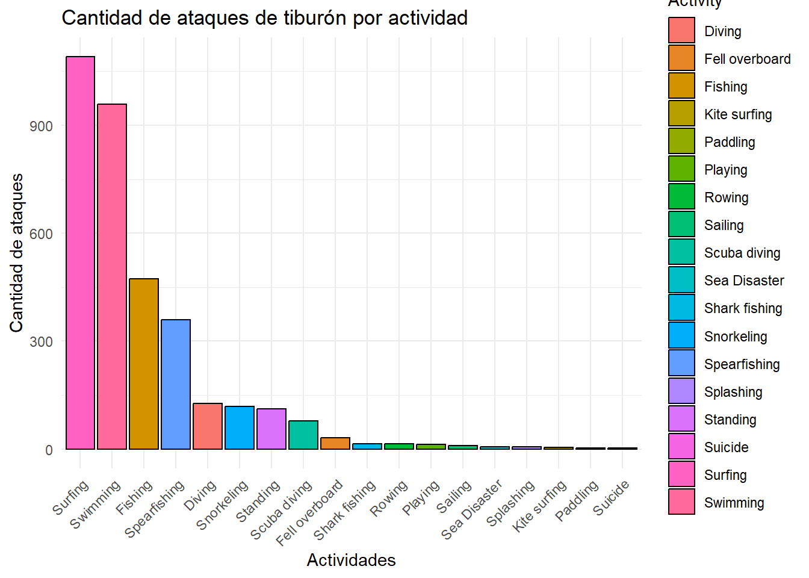
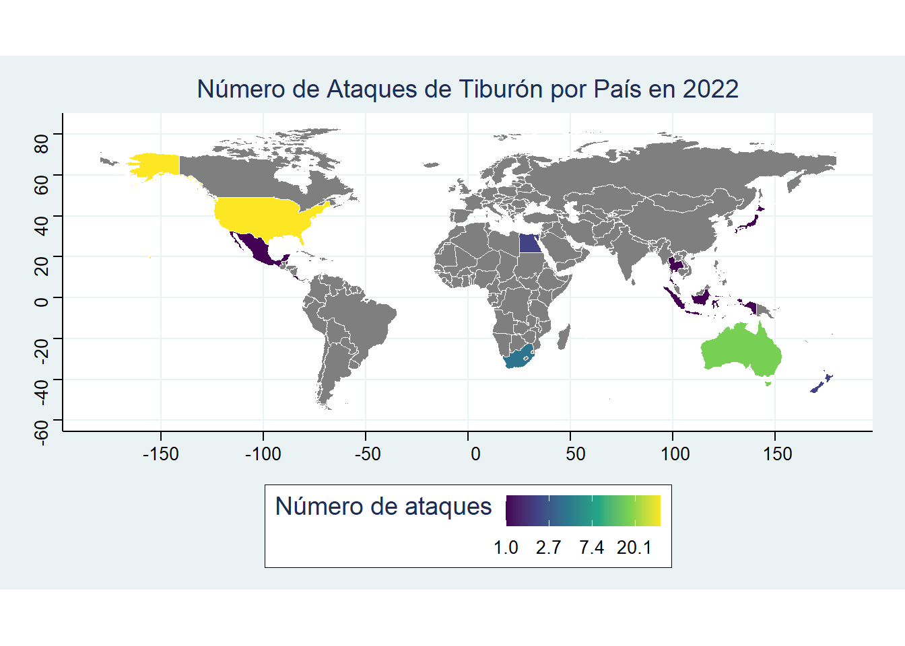

El tiburón es un animal fascinante, un depredador perfeccionado a través de millones de años de evolución (es más antiguo que los árboles) que tenemos la suerte de poder observar y analizar en nuestros tiempos. Sin embargo, en la mayoría de personas sienten miedo y rechazo hacia este. Si bien es cierto que estos animales pueden ser peligrosos debido a su fuerza de mordida y afilados dientes, no representan una amenaza real para nosotros los humanos. La cruda realidad es bien opuesta, pues es el ser humano la real amenaza para el tiburón.
Procederé a exponer una serie de datos que he obtenido de un archivo mejorado del archivo global de ataques de tiburón elaborado por el Shark Research Institute
1: Recuento de ataques de tiburones a humanos.
En primer lugar, vamos a observar la cantidad de ataques de tiburón que se han registrado en el archivo global:
Código
library(plotly)library(tidyverse)library(gganimate)library(patchwork)#CARGADO DE DATOSdatos <-"./datos/sharkie.csv"sharks <-rio::import(datos)#me ventilo los NAsharks_limpio <- sharks%>%drop_na()#Voy a seleccionar las variables que me interesan para realizar el trabajo, generando el DF general que usaré:DF_TIBURONE <- sharks_limpio %>%select(Year, Type, Country, Activity, Sex, Age,`Fatal (Y/N)`, Species)#GRAFICO CON NUMERO DE ATAQUES TOTAL POR AÑOAtaques_por_año <- DF_TIBURONE %>%group_by(Year) %>%summarize(Num_Attacks =n()) %>%mutate(total =sum(Num_Attacks)) %>%mutate(Total_acumulado =cumsum(Num_Attacks))G1 <-ggplot(Ataques_por_año,aes( Year, Num_Attacks)) +geom_line(size =0.90,color ="#BD1D00") +labs(title ="Número de ataques de tiburón por año.",subtitle ="Serie 1555-2022",x ="Año",y ="Número de ataques" ) + ggthemes::theme_stata() +transition_reveal(Year) +view_follow(fixed_y =TRUE)animate(G1, nframes =244, fps =20)G2 <-ggplot(Ataques_por_año, aes( Year, Total_acumulado)) +geom_line(size =0.9,color ="#BD1D00" ) +labs(title ="Total de ataques de tiburón",subtitle ="Serie acumulada 1555-2022",x ="Año",y ="Número de ataques" ) + ggthemes::theme_stata() +transition_reveal(Year) +view_follow(fixed_y =TRUE)animate(G2, nframes =244, fps =20)


A simple vista podemos ver que la cantidad de ataques tanto acumulada como por año ha ido en aumento a lo largo de la historia. Esto no es de sorpresa para nadie ya que se ha producido un constante aumento de la población humana y con ella un aumento respecto al número de actividades que se realizan en el mar (pesca, ocio, viajes en barco…) por lo que es lógico que los ataques de tiburón hayan aumentado. Sin embargo, las cantidades de ataques registrados son ridículamente pequeñas teniendo en cuenta la enorme cantidad de seres humanos que habitamos el planeta. Es más, existen otras especies animales que se cobran una mayor cantidad de vidas humanas que los tiburones:
Animal
Kills por año
Mosquitos
750000
Serpientes
100000
Perros
Entre 25 y 35 mil
Caracoles de agua dulce
Entre 10 y 20 mil
Veamos qué especies de tiburón son las que más ataques a personas tienen registrados según nuestros datos:
-En la gráfica, el término shark hace referencia a ataques de tiburón registrados cuya especie no se pudo identificar-
Estas 3 especies son las más conocidas por su gran tamaño y fuerza, es remarcable la agresividad en particular del tiburón toro (uno de los animales con niveles de testosterona más altos). No obstante, el que más ataques registrados tiene es el Gran Blanco, cuya mordida es de las más fuertes del reino animal, es un depredador con un olfato super desarrollado capaz de oler sangre a kilómetros de distancia y una visión remarcable (se creía que no podían ver a color, pero se ha demostrado lo contrario en recientes investigaciones). Esto último rompe el mito de que muchos ataques de esta especie hacia surfistas o buzos pueden deberse a que los confunden con presas habituales como focas, los investigadores se prestan más a teorías que atribuyen los ataques a otras razones como que el tiburón cree competir por una presa en concreto, también pueden ser actos de depredación por parte del animal. En cuanto al Tigre, se sabe que no tiene una dieta selectiva, por lo que se alimenta de prácticamente cualquier presa que encuentre (ya sean cangrejos, calamares, rayas, pequeños tiburones, tortugas…) por lo que esta especie aunque cuente con menos ataques, sí cuenta con mayor intención depredatoria que el resto.
Para ser concisos, la cantidad de ataques es realmente baja comparada con la población humana a lo largo de la historia, por lo que es muy improbable que un particular se vea envuelt@ en una situación de este estilo.
2: Las actividades más propensas a sufrir ataques.
Código
Actividades <-c("Fishing", "Swimming", "Diving", "Fell overboard", "Kite surfing", "Paddling","Playing", "Rowing", "Scuba diving", "Sailing", "Sea Disaster", "Shark fishing", "Snorkeling", "Spearfishing", "Splashing", "Standing", "Suicide", "Surfing")df_actividades <- DF_TIBURONE %>%group_by(Activity) %>%summarise("Num_Attacks"=n()) %>%filter (Activity%in%Actividades) %>%arrange(desc(Num_Attacks))barras2 <-ggplot(df_actividades, aes(x =reorder(Activity, -Num_Attacks), y = Num_Attacks, fill = Activity)) +geom_bar(stat ="identity", color ="black") +labs(title ="Cantidad de ataques de tiburón por actividad",x ="Actividades",y ="Cantidad de ataques") +theme_minimal() +theme(axis.text.x =element_text(angle =45, hjust =1))barras2

Podemos observar que las actividades con más ataques registrados son las siguientes:
Actividad
Nº Ataques
Surf
1090
Nado
958
Pesca
473
Pesca con arpón
359
Todas tienen en común elementos que atraen a los tiburones; En el surf y en el nado tienen lugar una alta cantidad de salpicadas en el agua por parte de quienes realizan dicha actividad, esto activa el instinto depredador de los tiburones haciéndoles creer que hay potenciales presas en dichas áreas. En cuanto a la pesca es bastante obvio, primero el tipo de cebo que se use (ya que en función de lo que se pretenda pescar se usará uno concreto) y después aquello que se esté pescando atraerá al tiburón ya que es una presa fácil (téngase en cuenta que la sangre tanto del cebo como de la pesca en sí es detectada por los tiburones a una larga distancia). La pesca con arpón es aún más riesgosa ya que el propio buzo debe recoger la presa con sus manos y se expone directamente al tiburón.
En resumidas cuentas, las actividades más propensas a sufrir ataques son aquellas que estimulan el instinto del tiburón.
3: Mapamundi de ataques en 2022, zonas con más registros.
Código
library("stringr")library("rnaturalearth")library("rnaturalearthdata")DF_MAPA <- DF_TIBURONE %>%select(Year, Country) %>%filter(Year ==2022) %>%group_by(Country) %>%summarise(Num_Attacks =n()) %>%mutate(Country =case_when( Country =="USA"~"United States",TRUE~ Country # Mantener los demás países sin cambios )) %>%mutate(Country =str_to_title(Country))world <- rnaturalearth::ne_countries(scale ="medium", returnclass ="sf")world <- world %>%filter(subregion !="Antarctica") %>%filter(admin !="Greenland")world <- world %>%select(name, iso_a3, geometry) df_world <-full_join(DF_MAPA, world, by =c("Country"="name") ) p10 <-ggplot(df_world) +geom_sf(aes(fill = Num_Attacks, geometry = geometry), color ="white", size =0.5) +scale_fill_viridis_c(option ="D", trans ="log", labels = scales::label_number(scale =1)) +# Sin decimales en la leyendatheme_void() +labs(title ="Número de Ataques de Tiburón por País en 2022",fill ="Número de ataques") + ggthemes::theme_stata()p10

-Que conste que en Alaska no hubo ataques, si no que se hace referencia a todo EEUU como país-
4: CONCLUSIÓN
Los tiburones son un animal salvaje que no representa un peligro para el ser humano ya que no formamos parte de su dieta habitual y por tanto no nos detecta como una presa. Sin embargo, debemos ser precavidos y mantener la calma en aquellas situaciones en las que nos encontremos con estos ya que al ser grandes depredadores pueden causarnos daños muy graves, al ser salvajes su comportamiento puede ser impredecible. Debemos apreciar su belleza y defenderlos ya que son un importante componente del ecosistema marino.
Ejecutar el código
---title: "Ataques de tiburón a lo largo de la historia."author: - name: Juan Bosco Pujol affiliation: Universitat de València affiliation-url: https://www.uv.esdate: 2024-01-03 #--categories: [trabajo BigData, selección natural] #--image: "./imagenes/imagen_01.png"title-block-banner: true #- {true, false, "green","#AA0000"} toc-depth: 3smooth-scroll: trueformat: html: link-external-newwindow: true css: ./assets/my_css_file.css toc: true #- CUIDADO!!!!code-tools: truecode-link: truecode-fold: true---# IntroducciónEl tiburón es un animal fascinante, un depredador perfeccionado a través de millones de años de evolución (es más antiguo que los árboles) que tenemos la suerte de poder observar y analizar en nuestros tiempos. Sin embargo, en la mayoría de personas sienten miedo y rechazo hacia este. Si bien es cierto que estos animales pueden ser peligrosos debido a su fuerza de mordida y afilados dientes, no representan una amenaza real para nosotros los humanos. La cruda realidad es bien opuesta, pues es el ser humano la real amenaza para el tiburón.Procederé a exponer una serie de datos que he obtenido de un archivo mejorado del archivo global de ataques de tiburón elaborado por el [*Shark Research Institute*](https://www.sharkattackfile.net/index.htm)# 1: Recuento de ataques de tiburones a humanos.> ## En primer lugar, vamos a observar la cantidad de ataques de tiburón que se han registrado en el archivo global:```{r}library(plotly)library(tidyverse)library(gganimate)library(patchwork)#CARGADO DE DATOSdatos <-"./datos/sharkie.csv"sharks <-rio::import(datos)#me ventilo los NAsharks_limpio <- sharks%>%drop_na()#Voy a seleccionar las variables que me interesan para realizar el trabajo, generando el DF general que usaré:DF_TIBURONE <- sharks_limpio %>%select(Year, Type, Country, Activity, Sex, Age,`Fatal (Y/N)`, Species)#GRAFICO CON NUMERO DE ATAQUES TOTAL POR AÑOAtaques_por_año <- DF_TIBURONE %>%group_by(Year) %>%summarize(Num_Attacks =n()) %>%mutate(total =sum(Num_Attacks)) %>%mutate(Total_acumulado =cumsum(Num_Attacks))G1 <-ggplot(Ataques_por_año,aes( Year, Num_Attacks)) +geom_line(size =0.90,color ="#BD1D00") +labs(title ="Número de ataques de tiburón por año.",subtitle ="Serie 1555-2022",x ="Año",y ="Número de ataques" ) + ggthemes::theme_stata() +transition_reveal(Year) +view_follow(fixed_y =TRUE)animate(G1, nframes =244, fps =20)G2 <-ggplot(Ataques_por_año, aes( Year, Total_acumulado)) +geom_line(size =0.9,color ="#BD1D00" ) +labs(title ="Total de ataques de tiburón",subtitle ="Serie acumulada 1555-2022",x ="Año",y ="Número de ataques" ) + ggthemes::theme_stata() +transition_reveal(Year) +view_follow(fixed_y =TRUE)animate(G2, nframes =244, fps =20)```A simple vista podemos ver que la cantidad de ataques tanto acumulada como por año ha ido en aumento a lo largo de la historia. Esto no es de sorpresa para nadie ya que se ha producido un constante aumento de la población humana y con ella un aumento respecto al número de actividades que se realizan en el mar (pesca, ocio, viajes en barco...) por lo que es lógico que los ataques de tiburón hayan aumentado. Sin embargo, las cantidades de ataques registrados son ridículamente pequeñas teniendo en cuenta la enorme cantidad de seres humanos que habitamos el planeta. Es más, existen otras especies animales que se cobran una mayor cantidad de vidas humanas que los tiburones:| Animal | Kills por año ||-------------------------|-------------------|| Mosquitos | 750000 || Serpientes | 100000 || Perros | Entre 25 y 35 mil || Caracoles de agua dulce | Entre 10 y 20 mil |Veamos qué especies de tiburón son las que más ataques a personas tienen registrados según nuestros datos:```{r}Especies <-c("White shark", "Grey reef shark", "Tiger shark", "Wobbegong shark", "Blacktip shark", "Sandtiger shark", "Reef shark", "Bull shark", "Blacktip reef shark", "Whitetip reef shark", "Lemon shark", "Porbeagle shark", "Nurse shark", "Bronze whaler shark", "Raggedtooth shark", "Mako shark", "Hammerhead shark", "Whaler shark", "Copper shark", "Galapagos shark", "Cookiecutter shark", "Broadnose sevengil shark", "Spinner shark", "Blue shark", "Carpet shark", "Basking shark", "Salmon shark", "Zambesi shark","shark")Ataques_por_especie <- DF_TIBURONE %>%group_by(Species) %>%summarize(Num_Attacks =n()) %>%mutate(Total =sum(Num_Attacks),Especie =gsub("^\\+?[\\.+0-9]+'?[ ]?|[\\.+0-9]+[ ]?(m|cm)[ ]?to [\\.+0-9]+[ ]?(m|cm)[ ]?\\[([\\.+0-9]+)'? to ([\\.+0-9]+)'?\\][ ]?|[ ]?metre|[\\[\\]][ ]?|\\d+[ ]?[-–][ ]?\\[?\\d+[ ]?(kg|lb)\\]?[ ]?dead|,.*|[ ]?metre|[ ]?(m|cm)|\\[.*\\]|[;].*", "", Species))Ataques_interes <- Ataques_por_especie %>%select(Especie, Num_Attacks, Total) %>%filter(Especie %in% Especies) %>%group_by(Especie) %>%summarise(Num_Attacks =sum(Num_Attacks)) %>%arrange(desc(Num_Attacks)) %>%mutate(Total =cumsum(Num_Attacks)) %>%mutate(Porcentaje =sprintf( "%.1f", Num_Attacks /sum(Num_Attacks) *100)) %>%mutate(Total_Porcentaje =1510/1510*100)barras1 <-ggplot(Ataques_interes, aes(x =reorder(Especie, -Num_Attacks), y = Num_Attacks, fill = Especie)) +geom_bar(stat ="identity", color ="black") +labs(title ="Cantidad de ataques de tiburón por especie",x ="Especies de tiburón",y ="Cantidad de ataques") +theme_minimal() +theme(axis.text.x =element_text(angle =45, hjust =1))ggplotly(barras1)```> ## Las especies con más ataques registrados son:| Especie | Nº Ataques ||---------|------------||Tiburón Blanco| 451 ||Tiburón sin identificar [^1]| 287 ||Tiburón Tigre| 235 ||Tiburón Toro| 134 |-En la gráfica, el término **shark** hace referencia a ataques de tiburón registrados cuya especie no se pudo identificar-Estas 3 especies son las más conocidas por su gran tamaño y fuerza, es remarcable la agresividad en particular del tiburón toro (uno de los animales con niveles de testosterona más altos). No obstante, el que más ataques registrados tiene es el Gran Blanco, cuya mordida es de las más fuertes del reino animal, es un depredador con un olfato super desarrollado capaz de oler sangre a kilómetros de distancia y una visión remarcable (se creía que no podían ver a color, pero se ha demostrado lo contrario en recientes investigaciones). Esto último rompe el mito de que muchos ataques de esta especie hacia surfistas o buzos pueden deberse a que los confunden con presas habituales como focas, los investigadores se prestan más a teorías que atribuyen los ataques a otras razones como que el tiburón cree competir por una presa en concreto, también pueden ser actos de depredación por parte del animal.En cuanto al Tigre, se sabe que no tiene una dieta selectiva, por lo que se alimenta de prácticamente cualquier presa que encuentre (ya sean cangrejos, calamares, rayas, pequeños tiburones, tortugas...) por lo que esta especie aunque cuente con menos ataques, sí cuenta con mayor intención depredatoria que el resto.Para ser concisos, la cantidad de ataques es realmente baja comparada con la población humana a lo largo de la historia, por lo que es muy improbable que un particular se vea envuelt@ en una situación de este estilo.# 2: Las actividades más propensas a sufrir ataques. ```{r}Actividades <-c("Fishing", "Swimming", "Diving", "Fell overboard", "Kite surfing", "Paddling","Playing", "Rowing", "Scuba diving", "Sailing", "Sea Disaster", "Shark fishing", "Snorkeling", "Spearfishing", "Splashing", "Standing", "Suicide", "Surfing")df_actividades <- DF_TIBURONE %>%group_by(Activity) %>%summarise("Num_Attacks"=n()) %>%filter (Activity%in%Actividades) %>%arrange(desc(Num_Attacks))barras2 <-ggplot(df_actividades, aes(x =reorder(Activity, -Num_Attacks), y = Num_Attacks, fill = Activity)) +geom_bar(stat ="identity", color ="black") +labs(title ="Cantidad de ataques de tiburón por actividad",x ="Actividades",y ="Cantidad de ataques") +theme_minimal() +theme(axis.text.x =element_text(angle =45, hjust =1))barras2```> ## Podemos observar que las actividades con más ataques registrados son las siguientes:| Actividad | Nº Ataques ||---------|------------|| Surf | 1090 || Nado | 958 || Pesca| 473 || Pesca con arpón| 359 |Todas tienen en común elementos que atraen a los tiburones;En el surf y en el nado tienen lugar una alta cantidad de salpicadas en el agua por parte de quienes realizan dicha actividad, esto activa el instinto depredador de los tiburones haciéndoles creer que hay potenciales presas en dichas áreas.En cuanto a la pesca es bastante obvio, primero el tipo de cebo que se use (ya que en función de lo que se pretenda pescar se usará uno concreto) y después aquello que se esté pescando atraerá al tiburón ya que es una presa fácil (téngase en cuenta que la sangre tanto del cebo como de la pesca en sí es detectada por los tiburones a una larga distancia). La pesca con arpón es aún más riesgosa ya que el propio buzo debe recoger la presa con sus manos y se expone directamente al tiburón.En resumidas cuentas, las actividades más propensas a sufrir ataques son aquellas que estimulan el instinto del tiburón.# 3: Mapamundi de ataques en 2022, zonas con más registros.```{r}library("stringr")library("rnaturalearth")library("rnaturalearthdata")DF_MAPA <- DF_TIBURONE %>%select(Year, Country) %>%filter(Year ==2022) %>%group_by(Country) %>%summarise(Num_Attacks =n()) %>%mutate(Country =case_when( Country =="USA"~"United States",TRUE~ Country # Mantener los demás países sin cambios )) %>%mutate(Country =str_to_title(Country))world <- rnaturalearth::ne_countries(scale ="medium", returnclass ="sf")world <- world %>%filter(subregion !="Antarctica") %>%filter(admin !="Greenland")world <- world %>%select(name, iso_a3, geometry) df_world <-full_join(DF_MAPA, world, by =c("Country"="name") ) p10 <-ggplot(df_world) +geom_sf(aes(fill = Num_Attacks, geometry = geometry), color ="white", size =0.5) +scale_fill_viridis_c(option ="D", trans ="log", labels = scales::label_number(scale =1)) +# Sin decimales en la leyendatheme_void() +labs(title ="Número de Ataques de Tiburón por País en 2022",fill ="Número de ataques") + ggthemes::theme_stata()p10```-Que conste que en Alaska no hubo ataques, si no que se hace referencia a todo EEUU como país-# 4: CONCLUSIÓNLos tiburones son un animal salvaje que no representa un peligro para el ser humano ya que no formamos parte de su dieta habitual y por tanto no nos detecta como una presa. Sin embargo, debemos ser precavidos y mantener la calma en aquellas situaciones en las que nos encontremos con estos ya que al ser grandes depredadores pueden causarnos daños muy graves, al ser salvajes su comportamiento puede ser impredecible. Debemos apreciar su belleza y defenderlos ya que son un importante componente del ecosistema marino.